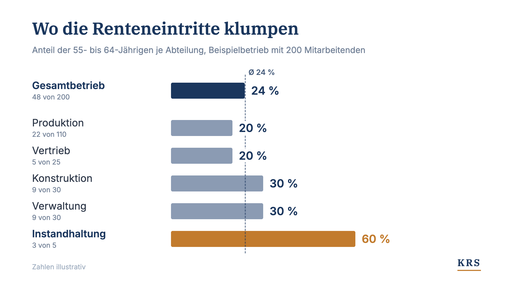
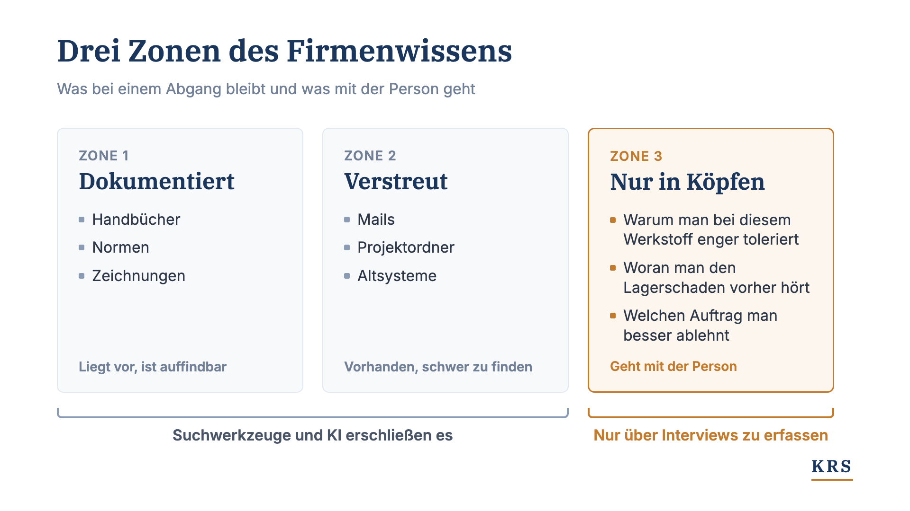

Der Wissensabfluss passiert nicht im Durchschnitt
Knapp ein Viertel der Erwerbstätigen ist zwischen 55 und 64. Im Schnitt klingt das planbar. In einzelnen Abteilungen gehen aber mehrere Erfahrene fast gleichzeitig, und dort reicht Doppelbesetzung nicht mehr.

Wenn über den demografischen Wandel gesprochen wird, fallen fast immer Durchschnittswerte. Knapp ein Viertel der Erwerbstätigen ist zwischen 55 und 64, verteilt über die nächsten zehn Jahre. Das klingt handhabbar. Für die Wissenssicherung im eigenen Unternehmen ist der Durchschnitt aber die Zahl, die am meisten beruhigt und am wenigsten hilft. Renteneintritte verteilen sich nicht gleichmäßig über ein Unternehmen. Sie kommen gebündelt, in einzelnen Abteilungen und innerhalb weniger Jahre.
Im Sommer habe ich auf LinkedIn eine kurze Serie zu den Zahlen dahinter geschrieben. Hier fasse ich sie zusammen und ergänze, was wir seitdem in Projekten gesehen haben: was mit den Erfahrenen verloren geht und wo man mit der Sicherung anfängt.
Die Zahlen
In Deutschland sind 24 Prozent der Erwerbstätigen zwischen 15 und 64 Jahren 55 bis 64 Jahre alt, rund 9,8 Millionen Menschen. Das ist der höchste Wert in der EU, der EU-Schnitt liegt bei gut 20 Prozent (Statistisches Bundesamt, Februar 2026).
Das Tempo zeigt eine zweite Zahl. Pro Jahr erreichen rund 1,3 Millionen Menschen das Rentenalter, nur etwa 800.000 Jüngere rücken ins Erwerbsalter nach. Das Institut der deutschen Wirtschaft rechnet damit, dass das Erwerbspersonenpotenzial bis 2036 um etwa 7 Prozent auf rund 51 Millionen sinkt. Die Lücke beziffert es auf 4,3 Millionen Arbeitskräfte. Vor zwei Jahren hatte es noch drei Millionen geschätzt (IW Köln, Juni 2026).
Der Höhepunkt steht noch aus. Die Babyboomer-Jahrgänge 1954 bis 1969 umfassen knapp 20 Millionen Menschen. Der geburtenstärkste Jahrgang der Nachkriegszeit ist 1964 mit 1.357.304 Geburten (Statistisches Bundesamt). Für ihn gilt erstmals die Regelaltersgrenze von 67 Jahren, er geht also regulär 2031 in Rente. Die größten Abgangsjahre liegen noch vor uns.
Das hat zwei Folgen. Bei gleicher Wertschöpfung müssen weniger Leute mehr leisten. Und aus den Unternehmen geht mehr Erfahrungswissen heraus, als junge Mitarbeiter nachkommen, die es eins zu eins auffangen könnten. Die Entwicklung ist strukturell und lässt sich nicht aussitzen. Sie ist aber planbar, und auf Planbares kann man sich vorbereiten.
Warum der Durchschnitt täuscht
Eingestellt wurde in Wellen. Wer in den 1990er-Jahren einen Bereich aufgebaut hat, holte damals mehrere Leute im ähnlichen Alter. Die gehen jetzt auch zusammen, innerhalb weniger Jahre.
Ein Beispiel: Ein Betrieb mit 200 Mitarbeitenden liegt genau im Bundesschnitt, 48 Personen sind zwischen 55 und 64. Verteilt über zehn Jahre sind das knapp fünf Renteneintritte pro Jahr. Das lässt sich planen. In der Instandhaltung arbeiten aber fünf Leute, und drei davon gehen in den nächsten drei Jahren.

Doppelbesetzung stößt an zwei Grenzen
Der übliche Reflex ist Doppelbesetzung: den Nachfolger ein, zwei Jahre mitlaufen lassen. Dieses Modell stößt gerade von zwei Seiten an Grenzen.
Es wird teurer, weil bei einem Klumpen mehrere Stellen gleichzeitig doppelt besetzt sein müssten. In der Instandhaltung aus dem Beispiel wären das drei zusätzliche Stellen über zwei Jahre.
Und es wird immer öfter unmöglich, weil der Nachfolger fehlt. Bei 1,3 Millionen Abgängen und 800.000 Zugängen pro Jahr gibt es für viele Stellen keinen 1:1-Nachfolger mehr. Wer eine erfahrene Fachkraft ersetzen will, konkurriert mit allen anderen um einen kleiner werdenden Pool.
Eine Stelle lässt sich irgendwann nachbesetzen. Das Erfahrungswissen, das mit einer langjährigen Fachkraft geht, nicht.
Was mit den Erfahrenen geht
Um zu sehen, was bei einem Abgang verloren geht, unterscheiden wir drei Zonen.
Zone 1 ist die Dokumentation: Handbücher, Normen, Zeichnungen. Sie liegt vor und ist auffindbar.
Zone 2 ist verstreut: Mails, Projektordner, Altsysteme. Das Wissen ist vorhanden, aber irgendwo in „Anlage_final_v3_NEU“.
Zone 3 steckt nur in Köpfen: warum man bei diesem Werkstoff enger toleriert, woran man einen Lagerschaden drei Wochen vorher hört, welchen Auftrag man besser ablehnt. Dazu gehört der Kollege, den man im Urlaub anruft, wenn die Anlage steht.

Zone 1 und 2 kann heute jedes KI-Werkzeug durchsuchen. Die Antworten bleiben trotzdem dünn, weil in der Dokumentation der Normalfall steht. Die Norm sagt, was gilt. Die erfahrensten Leute wissen, wann man davon abweicht. Erst beides zusammen ergibt eine Antwort, der ein Ingenieur traut.
Wie groß Zone 3 ist, zeigt ein Beispiel aus einem unserer Projekte. Wir dokumentieren dort den Angebotsprozess eines Industrieunternehmens. Ob eine Anfrage machbar ist, welche Rückfrage vor der Kalkulation kommt, wann ein Fall zur Sonderlösung wird: Das entscheiden die Erfahrenen im Team. Ein einziges Experteninterview lieferte über 150 strukturierte Wissensbausteine, die in keiner der vorher eingelesenen Unterlagen standen.
Warum Software das allein nicht löst
Mit KI-Agenten lässt sich der Standardfall heute schnell automatisieren, die Demo überzeugt nach wenigen Wochen. Zäh wird es bei den Ausnahmen. Welche Situationen es überhaupt gibt und woran man sie erkennt, wissen die Erfahrenen. Die richtigen Antworten für Testfälle kommen aus dem Fachbereich, jemand muss sie erheben und begründen. Und wenn ein Mensch eine Ausnahme entscheidet, fehlt bis zur wiederverwendbaren Regel genau ein Schritt: festhalten, warum so entschieden wurde.
Die Modelle werden jedes Jahr besser, und kaufen kann sie jeder. Das Wissen, mit dem sie im eigenen Unternehmen arbeiten sollen, haben nur die eigenen Leute. Und viele von ihnen gehen in den nächsten Jahren in Rente.
Wo man anfängt
Öffnen Sie die Abteilungsliste und sortieren Sie nach Geburtsjahr. Jeder findet seinen Klumpen. Offen ist nur, ob Sie ihn vor dem Abgang finden oder danach.
Dort fängt Wissenssicherung an: wo mehrere Erfahrene gleichzeitig gehen und Doppelbesetzung rechnerisch nicht mehr aufgeht. In unseren Projekten nehmen wir uns ein Thema vor, an dem heute alles an wenigen Personen hängt, und gehen in drei Schritten vor.
Interviews entlang echter Fälle. Abstrakte Prozessfragen liefern zurück, was ohnehin dokumentiert ist. Echte Fälle liefern die Entscheidungsregeln dahinter, einschließlich der Ausnahmen.
Jede Aussage mit Quelle und Begründung. Interviews und vorhandene Dokumente werden zusammengeführt. Widersprüche zwischen Experten werden sichtbar und geklärt, bevor jemand damit arbeitet.
Eine Wissensbasis für Menschen und KI. Neue Kollegen lesen das Ergebnis genauso wie KI-Assistenten. Das Wissen der Erfahrenen wirkt damit über den eigenen Schreibtisch hinaus.
Für die Experten sind das drei bis fünf Stunden pro Woche. Ein Thema dauert bei uns rund acht Wochen.
Das Wissen zu sichern, solange es im Haus ist, ist der Teil der Übergabe, der auch ohne Nachfolger funktioniert.